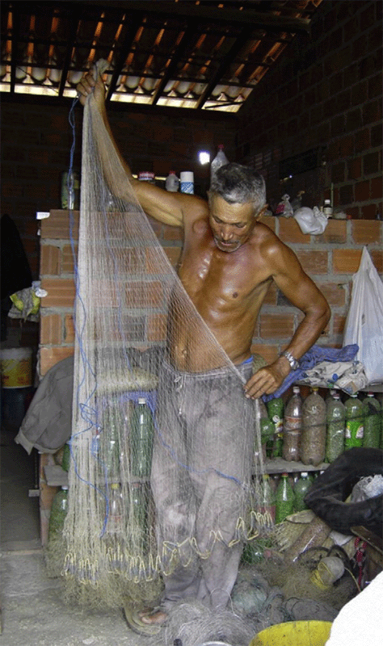
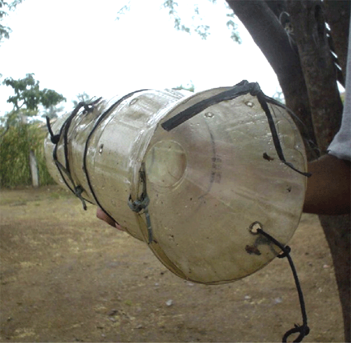

#3
November 2026
How do people behave when a public goods game is repeated?
Hermann, Thöni, and Gächter (2008) conducted a series of laboratory experiments around the world, identical to the one you took part in during our first lecture.
By now, you should understand that this experiment mimics the costs and benefits of contributing to a public good in the real world.
Read the paper HERE
In every city where the game was played, contributions to the public good were high in the first period, although much higher in some cities (such as Copenhagen) than in others (such as Melbourne).
This is evidence that people are not solely self-interested.
However, contributions declined over time everywhere. Why?
Many people are willing to contribute as long as others reciprocate.
Disappointed expectations of reciprocity are the most convincing explanation for the regular decline in contributions in later rounds of the game.
Contributors reduced their own contributions when they observed others free-riding on them, in order to punish this unfair behaviour.
Since free-riders’ payoffs depend on total contributions to the public good, the only way to punish free-riders in this experiment was to stop contributing.
To shed further light on this idea, Hermann, Thöni, and Gächter (2008) modified the public goods game by introducing a costly punishment option.
In every round, after observing the contributions of the other members of their group, each subject could pay to punish other members by making them pay a $3 fine.
The punisher remained anonymous but had to pay $1 per subject punished.
Contributions remained stable over time!
Intuition: people who believe that others have treated them unfairly may retaliate, even when doing so is costly.
Punishing free-riders is a form of altruism, because it costs the punishers something to help deter free-riding behaviour (which harms the entire group).
Take-home message: people can sustain high levels of cooperation as long as they have opportunities to punish free-riders once it is clear who is contributing less than others.
Experimental results from the laboratory would not be very interesting if they did not reflect real-world behaviour.
Potential issues (Levitt and List 2007):
Read the paper HERE
Fortunately, there is evidence that experiments can produce meaningful results — or, in the jargon of behavioural economics, that experimental findings have external validity.
Fehr and Leibbrandt (2011) investigated this by conducting an experiment with a group of Brazilian shrimpers.

Read the paper HERE
Shrimp are caught in large, bucket-shaped plastic traps.
Holes are cut in the bottom of the traps to allow immature shrimp to escape, thereby preserving the stock for future catches.
Smaller holes catch more shrimp in the short run but jeopardize the future stock.

The fishers face a social dilemma. A shrimper’s current income would be highest if they cut only small holes in their own traps while all other shrimpers cut large holes in theirs.
Using small holes in one’s traps is a form of defection. As in the public goods game, it is the dominant strategy for a self-regarding individual.
Thus, regardless of what others do, a self-regarding shrimper would cut small holes.
A shrimper may resist the temptation to defect if sufficiently patient and concerned about other shrimpers.
Fehr and Leibbrandt (2011) had shrimpers play a public goods game in the laboratory…
…and then measured the size of the holes in each shrimper’s traps.
Behaviour in the laboratory predicts real-world behaviour.
The shrimpers who contributed more in the public goods game had cut larger holes in their traps.
So far, we have discussed only direct punishment, in which people bear a cost to punish others.
Indirect punishment, by contrast, involves withholding rewards or help from people who behave selfishly.
Balafoutas, Nikiforakis, and Rockenbach (2014) conducted a field experiment to investigate how people use direct and indirect punishment in everyday life.
Read the paper HERE
The experiment was conducted at two train stations in Cologne, Germany, with the help of drama students.
A group of actors followed a fixed script to stage social interactions and recorded the reactions of passengers (referred to as observers) who witnessed them.
| Act 1: Norm violation | The violator litters |
| Act 2: Punishment | The punisher intervenes |
| Act 3: Need for help | The punisher drops books and leaflets |
| Action of interest | Helping the punisher |
| Act 1: Norm violation | - |
| Act 2: Punishment | - |
| Act 3: Need for help | The actor drops books and leaflets |
| Action of interest | Helping the actor |
| Act 1: Norm violation | The violator litters |
| Act 2: Punishment | - |
| Act 3: Need for help | The violator drops books and leaflets |
| Action of interest | Directly punishing and/or helping the violator |
| Act 1: Norm violation | The violator litters |
| Act 2: Punishment | - |
| Act 3: Need for help | - |
| Action of interest | Direct punishment |
Observers do not tend to reward punishers for punishing violators: the helping rate in BaseHelp is not significantly different from the rate in HelpPunisher.
Violators tend to receive less help than people who do not violate the norm: the helping rate in HelpViolator is significantly lower than the rate in BaseHelp.